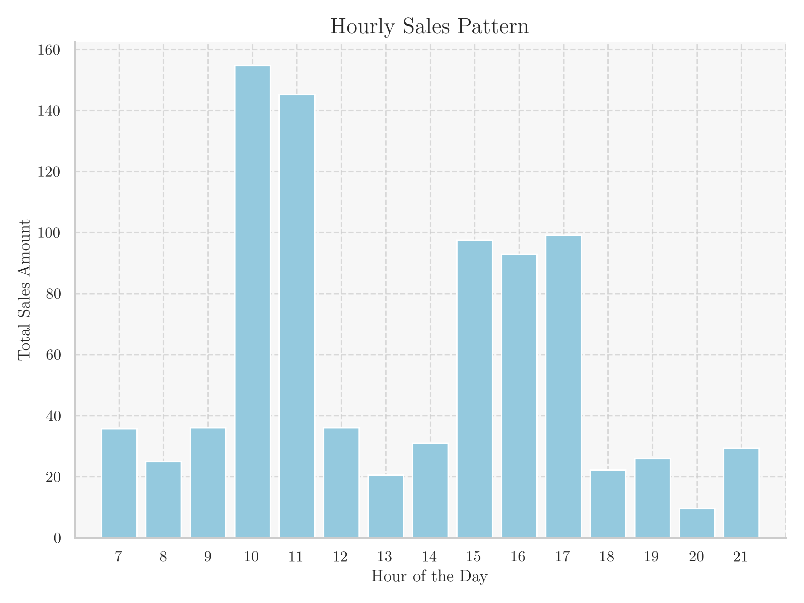
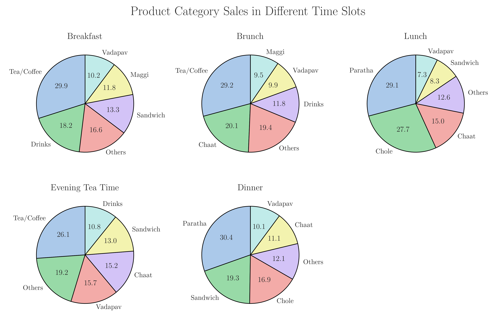
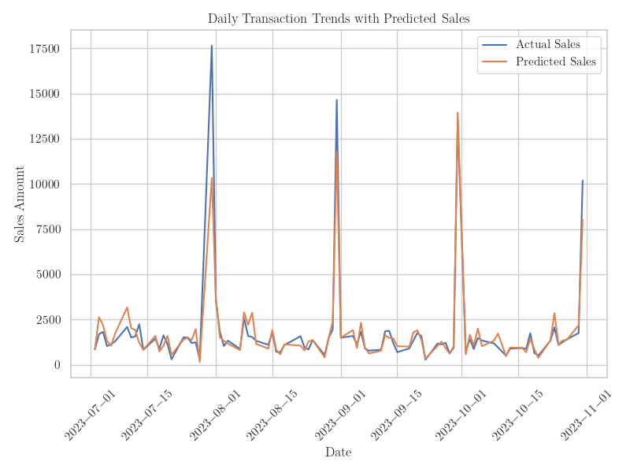
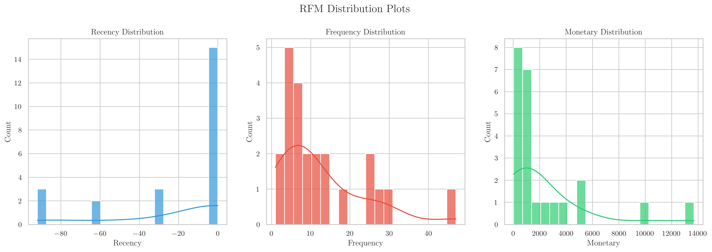
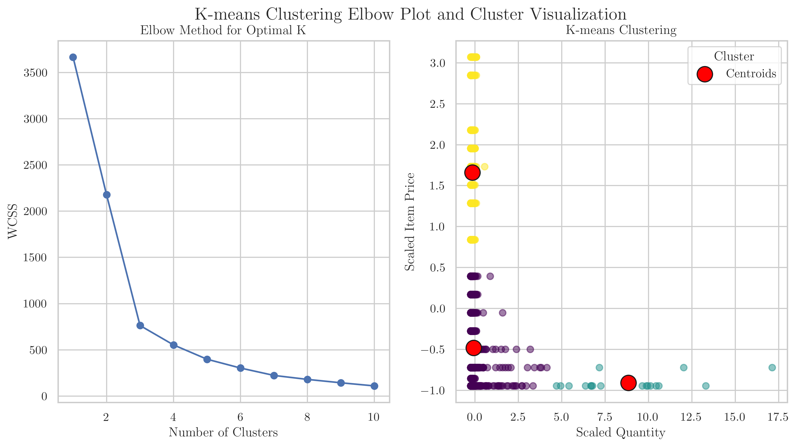

Data-Driven Transformation: Optimizing Operations and Customer Engagement at XYZ Café
PDF: Final.pdf
Executive Summary
The project focuses on XYZ Café, utilizing advanced data analysis to optimize operations and enhance customer engagement. By examining daily sales patterns, the project aims to uncover insights into customer preferences, aiding in efficient profit maximization.
Using hourly variations in sales data, the project seeks to refine demand forecasting accuracy, enabling precise resource allocation. Improved regression analysis techniques are employed to better understand sales trends, enhancing decision-making.
Key findings from the analysis highlight distinct peak sales hours, emphasizing morning and late afternoon periods. Varied consumer preferences across meal times guide potential menu adaptations and targeted marketing efforts. Notably, the enhanced GradientBoosting model improves sales prediction accuracy, laying a robust foundation for demand forecasting.
Customer segmentation through RFM analysis and K-means clustering reveals valuable insights. High-value customer identification and distinctive purchasing behaviour clusters assist in tailored engagement strategies and optimized resource allocation.
The amalgamation of these methodologies offers detailed insights into sales trends and customer behaviour, fostering informed decision-making crucial for the café’s sustainable growth and success. This data-driven approach enhances operational efficiency and strategic planning, ultimately augmenting the café’s competitive edge in the market.
Details and Findings of Analysis Process/Method
Overview of Methodologies Used
In the midterm submission, various analysis methods were initially employed to gain a comprehensive understanding of the café’s operational dynamics and customer engagement. Building upon this groundwork, the project has transitioned to implementing advanced techniques aimed at conducting a more exhaustive analysis. These enhanced methods aim to dive deeper into daily sales patterns by examining hourly variations, refining demand forecasting accuracy, and improving regression analysis techniques.
The primary goal is to gain a finer understanding of when and what customers prefer, aiding in better profitability and efficient operations. By integrating these approaches, the project endeavours to unearth more intricate insights into sales trends and customer behaviours, contributing significantly to informed decision-making for the café’s sustainable growth and success.
Detailed Analysis Methodologies Employed
Examination of Sales Patterns Across Hours
Data Processing and Initial Inspection:
- Data Cleaning:
- Checked for missing or inconsistent entries in the dataset, ensuring data integrity.
- Addressed any anomalies or discrepancies identified during the cleaning process.
- Initial Data Inspection:
- Conducted preliminary data exploration to understand the distribution and format of the hourly sales dataset.
- Utilized statistical measures and visualization techniques to observe trends and patterns within the data.
Hourly Sales Analysis Approach:
- Hourly Sales Calculation:
- Aggregated sales data on an hourly basis to discern hourly sales trends throughout the day.
- Calculated average sales values and assessed variations across different time slots.
- Time Slot Identification:
- Identified distinct time slots (e.g., morning, late afternoon, evening) for a detailed analysis of sales patterns.
- Segregated sales data to analyse peak and low-sales hours within each identified time slot.
- Pattern Recognition:
- Applied descriptive statistical methods to unveil any noticeable trends or fluctuations in sales within each hourly segment.
- Considered the significance of specific hours in contributing to daily revenue.
Analysis of Sales Distribution Across Time Segments and Product Categories
Data Segmentation and Preliminary Inspection:
- Data Segregation:
- Segmented sales data based on specific meal times (breakfast, brunch, tea time, lunch, dinner) and product categories.
- Prepared distinct subsets for each mealtime to analyse preferences and sales patterns.
- Initial Pattern Recognition:
- Conducted preliminary analysis to observe sales distribution across different meal times and product categories.
- Utilized descriptive statistical measures and visualization techniques to identify prevalent items and customer preferences within each segment.
Meal Time and Product Category Analysis Approach:
- Meal Time Preferences:
- Identified and categorized sales preferences based on distinct meal times, such as breakfast, brunch, and evening tea time.
- Analysed prevalent items and patterns during each mealtime to comprehend consumer choices and preferences.
- Product Category Insights:
- Segregated sales data based on product categories to understand popular items across varied categories like beverages, quick bites, snacks, and substantial meals.
- Explored consistent favourites and diverse choices within different product categories to highlight preferences across the menu.
- Consumer Behaviour Patterns:
- Utilized statistical analysis to uncover consumer behaviour patterns specific to meal times and product categories.
- Observed variations in sales distribution to derive insights into focused versus varied sales patterns and their relevance for menu adaptations and marketing strategies.
Advancement in Sales Prediction using GradientBoosting Model Feature Selection and Preprocessing:
- Variable Importance Assessment:
- Evaluated features using SelectKBest from Scikit-learn to identify impactful variables.
- Prioritized variables based on their scores and statistical significance.
Model Training and Evaluation:
- Model Comparison and Training:
- Utilized various regression models (Linear Regression, Lasso, Ridge, RandomForest, GradientBoosting) for predictive analysis.
- Trained models with selected features to compare their performance.
- Model Performance Assessment:
- Assessed model performance metrics such as R-squared and Root Mean Squared Error (RMSE) to gauge predictive accuracy.
- Evaluated the effectiveness of each model in capturing sales trends and patterns.
Visualization and Result Interpretation:
- Predictive Model Visualization:
- Generated visualizations depicting actual versus predicted sales trends using the GradientBoosting model.
- Analysed the alignment between predicted and actual trends to validate model accuracy.
- Model Improvement Analysis:
- Compared the GradientBoosting model’s performance against prior models (e.g., Linear Regression) to emphasize the improvement in prediction accuracy.
- Interpreted the significance of the enhanced model in capturing intricate sales patterns for informed decision-making.
Exploration of Customer Segmentation through RFM Analysis
Data Segmentation:
- Data Segmentation and Feature Extraction:
- Segmented the dataset into individual customer transactions for subsequent RFM analysis.
- Extracted essential features: recency of purchase, frequency of transactions, and monetary value spent per transaction.
RFM Score Derivation:
- Recency Score Determination:
- Calculated the recency score for each customer transaction by assessing the time interval since their last purchase.
- Assigned higher scores to more recent transactions for recency analysis.
- Frequency Score Calculation:
- Computed the frequency score by analysing the total number of transactions made by each customer during the analysed period.
- Assigned higher scores to customers with more frequent purchases for frequency analysis.
- Monetary Value Score Evaluation:
- Evaluated the monetary value score by assessing the total monetary contribution made by each customer.
- Assigned higher scores to customers with greater monetary spending for monetary value analysis.
RFM Segmentation:
- RFM Segment Creation:
- Combined individual recency, frequency, and monetary scores into a three-digit RFM segment to categorize customers based on their transaction behaviours.
- Established distinct customer segments delineating high-value, moderately active, and dormant customers.
- Segment Analysis and Interpretation:
- Analysed and interpreted the RFM segments to derive actionable insights regarding customer behaviours and preferences.
Customer Behaviour Profiling using K-means Clustering
Data Processing and Exploration:
- Data Preprocessing:
- Checked for data consistency, ensuring uniformity and accuracy within the dataset.
- Addressed any outliers or irregularities that might influence the clustering process.
- Feature Scaling:
- Applied feature scaling techniques to normalize the ‘Item Price’ and ‘Quantity’ attributes, ensuring equal weightage during the clustering process.
- Ensured fair comparison between variables by scaling their ranges appropriately.
K-means Clustering Execution:
- Optimal Cluster Identification:
- Utilized the elbow method to determine the optimal number of clusters for customer segmentation.
- Chose the number of clusters that best represented distinctive customer behaviours, while avoiding overfitting.
- Clustering Algorithm Implementation:
- Executed the K-means clustering algorithm on the preprocessed dataset to partition customers into distinct groups based on their purchasing behaviours.
- Observed the grouping patterns and relationships between customers within each cluster.
Pattern Analysis and Customer Group Interpretation:
- Cluster Characteristics Examination:
- Analysed each identified cluster’s characteristics in terms of purchasing patterns, focusing on ‘Item Price’ and ‘Quantity’ combinations.
- Extracted meaningful insights regarding customer preferences and tendencies within each cluster.
Results and Findings
Hourly Sales Analysis

Peak Sales Hours:
- Morning Peak: The hour between 10 AM and 11 AM stands out as the period with the highest average hourly sales, reaching approximately ₹154.80.
- Late Afternoon: Another significant peak is observed in the late afternoon around 3 PM, with average sales of around ₹97.48.
Morning vs. Afternoon Sales:
- Morning Hours: Generally, the morning hours witness higher sales, with an average ranging from ₹35.69 to ₹154.80 per hour.
- Afternoon Hours: After a slight dip during noon, sales pick up again, maintaining an average ranging from ₹20.49 to ₹99.16.
Evening Sales Trend:
- Evening Hours: Sales gradually decrease in the evening hours, dropping to an average ranging from ₹9.53 to ₹29.29 during these hours.
Insights:
- Peak Hours for Revenue: The morning hours, especially around 10 AM, contribute significantly to the daily revenue, suggesting higher customer footfall or increased spending during this time.
- Afternoon Consistency: After a slight dip during noon, sales maintain a relatively consistent pattern throughout the late afternoon.
- Evening Decline: Sales gradually decrease towards the evening, indicating a decrease in customer traffic or spending during these hours.
Sales Distribution Across Time Slots and Product Categories

Breakfast:
- Tea/Coffee Preference: Dominant sales of Tea/Coffee, holding a share of approximately 29.9%, indicate a strong morning beverage preference among customers.
- Quick Bites: Maggi, Sandwich, and Vadapav collectively constitute around 43.2% of breakfast sales, indicating popularity for quick morning bites.
Brunch:
- Varied Choices: Brunch displays a diverse range of sales across categories, with Tea/Coffee, Maggi, and Vadapav maintaining popularity, together representing about 48.6% of sales.
- Continued Preference: These items, particularly Tea/Coffee, Maggi, and Vadapav, maintain their popularity during the mid-morning period.
Evening Tea Time:
- Consistent Choices: Tea/Coffee continues to lead during this period, representing around 26.1% of sales.
- Snacks and Accompaniments: Chaats and Sandwiches gain traction, comprising about 28.2% of sales, possibly as preferred evening accompaniments.
Dinner and Lunch:
- Focused Choices: Paratha, Chole, and Chaat dominate sales during these meals, collectively representing approximately 58.5% during dinner and around 71.9% during lunch.
- Heavier Meal Preference: Customers seem to prefer more substantial meal items during lunch and dinner times.
Insights:
- Time-specific Preferences: Different times of the day exhibit specific consumer preferences, from morning beverages to substantial meal items.
- Consistent Favourites: Tea/Coffee remains a popular choice across multiple time slots, representing a significant portion of sales in various periods.
- Varied vs. Focused Sales: Brunch and Evening Tea Time offer a broader variety of choices, whereas Lunch and Dinner seem to focus on specific meal items, catering to more substantial meal preferences.
Improved Sales Prediction through GradientBoosting Model
Variable Selection and Model Building
Initially, feature selection was performed using SelectKBest, where Feature_1 exhibited the highest score (5.35) and a statistically significant p-value (0.0208). Other features, such as Feature_2, and Feature_3, showed varied scores and p-values.
Subsequently, five models (Model_1, Model_2, Model_3, Model_4, and Model_5) were trained with these features. Upon evaluation, Model_5 emerged with the most promising performance among these models, showcasing an R-squared value of 0.0266 and an RMSE of 207.50, indicating its superior predictive capability compared to other models.
Model Performance Improvement
The previous analysis (Midterm) involved a Model_1 with an R-squared around -0.5, signifying a poor fit. However, Model_5, despite a moderately improved R-squared value of 0.0266, demonstrated a significant advancement in prediction accuracy, reducing the RMSE to 207.5. This signifies a substantial enhancement in predictive power and a departure from the poor predictive performance observed previously.
Plot Interpretation

Visualizing actual sales versus predicted sales in a line plot for total daily sales showed a notable alignment between the predicted and actual trends when employing the Model_5. This proximity between the predicted and actual trends signifies the model’s capacity to accurately capture sales patterns, offering a strong foundation for decision-making in demand forecasting and business strategies.
Interpretation and Analysis
Despite the moderate improvement in the R-squared value from the prior poor fit, the transition from a negative R-squared to a positive one, especially when moving from Model_1 to Model_5, is a significant achievement. The model’s demonstrated ability to closely predict actual sales trends indicates its reliability in capturing intricate sales patterns, thus providing valuable insights for informed decision-making in business strategies and demand forecasting.
RFM Analysis Overview for Customer Segmentation
The RFM (Recency, Frequency, Monetary) analysis is a powerful technique used to segment customers based on their transaction behaviours. To derive the RFM values, the following steps were undertaken:
- Recency (R-score): It denotes the time since the last transaction made by each customer. Customers with lower scores have more recent purchases. Ranging from 1 (least recent) to 4 (most recent).
- Frequency (F-score): It represents the total number of transactions made by each customer during the analysed period. A higher score implies more frequent purchases. Ranging from 1 (least frequent) to 4 (most frequent).
- Monetary (M-score): It indicates the total monetary value spent by each customer. A higher score signifies higher monetary contributions. Ranging from 1 (least monetary value) to 4 (most monetary value).
Analysis of RFM Segmentation

The RFM_Segment column combines the individual R, F, and M scores into a three-digit number (RFM) that segments customers based on their behaviours.
High-Value Customers: Customers with an RFM segment of 444 or similar (e.g., 434, 444) are high-value customers. They have made recent purchases (R-score = 4), frequent transactions (F-score = 4), and contribute significantly in terms of monetary value (M-score = 4).
Loyal but Less Frequent Buyers: Segments like 422, 213, or 243 represent customers who might not make purchases as frequently but contribute substantially in terms of monetary value. They are recent buyers (R-score = 4) who spend well (M-score = 4 or 3) but with moderate frequency (F-score = 1 or 2).
Churned or Dormant Customers: Customers with segments like 111 or 121 signify those who haven’t made purchases recently (R-score = 1) or spend less despite some frequency (F-score = 2 or 3).

Understanding these segments assists the café in optimizing resource allocation. For instance, focusing on high-value customers for loyalty programs, devising strategies to increase the frequency of moderately active customers, and engaging in negotiations with the dormant ones for exclusive deals. This approach aligns with the café’s limited resources, aiming to maximize customer engagement and revenue with targeted efforts.
Analysis of Customer Segmentation using K-means Clustering
The optimal number of clusters for customer segmentation using K-means clustering was determined to be 3, employing the elbow technique. The clustering analysis was performed on the features ‘Item Price’ and ‘Quantity’.
The resulting clusters exhibited distinctive characteristics:
- Cluster 1: Low Priced Items and Low Quantity Bought: This cluster comprises customers who tend to purchase low-priced items in smaller quantities.
- Cluster 2: High Priced Items and Low Quantity Bought: Customers in this cluster show a preference for higher-priced items but make purchases in lower quantities.
- Cluster 3: Low Priced Items and High Quantity Bought: This cluster represents customers who consistently purchase low-priced items in larger quantities.
Upon analysis, an intriguing observation was made: there appeared to be no distinct cluster representing customers who purchase expensive items in high quantities. This absence suggests that within the dataset and based on the analysed features, customers who buy items in larger quantities tend to opt for lower-priced items.

The elbow plot showcasing the within-cluster sum of squares (WCSS) against the number of clusters indicated a clear ‘elbow’ or point of inflection at 3 clusters, signifying that additional clusters beyond this point do not significantly improve the model’s explanatory power.
The K-means clustering scatter plot, using ‘Item Price’ and ‘Quantity’ as axes, demonstrates the segregation of customers into these distinct clusters. These clusters provide valuable insights into customers’ purchasing behaviours based on price and quantity, allowing businesses to tailor marketing strategies, optimize inventory, and enhance product offerings to better meet the preferences and demands of different customer segments.
Interpretation of Results
- Peaks in Sales Throughout the Day:
- Revealed Patterns: Analysis of sales data pinpointed distinctive peaks in sales volume during specific hours, notably registering an average of ₹154.80 between 10 AM and 11 AM and approximately ₹97.48 around 3 PM.
- Operational Influence: These discernible patterns in customer purchasing behaviours highlight the critical importance of tailored operational strategies to capitalize on high-traffic hours, thereby optimizing revenue streams. For instance, employing additional staff during peak times can expedite service and enhance customer satisfaction, ultimately bolstering sales.
- Product Preferences Across Time Frames:
- Time-Specific Consumer Choices: The analysis underscored shifting product preferences across various time slots. Notably, items like Tea/Coffee, Maggi, Sandwiches, and Vadapav exhibited substantial sales during breakfast and brunch hours, while Chaats and Sandwiches gained traction during the evening tea time.
- Strategic Relevance: Recognizing these time-bound preferences provides a roadmap for menu adaptations and targeted marketing efforts. For instance, offering combo deals during popular hours or introducing new variants of favoured items during specific time frames can leverage these insights to attract and retain customers.
- Enhanced Predictive Modelling:
- Model Improvement: Comparing previous models, the transition from a poorly performing Linear Regression model (R-squared: -0.5) to the more accurate GradientBoosting model (R-squared: 0.0266) represents a significant improvement in predictive capability.
- Decision-making Empowerment: The enhanced predictive accuracy empowers decision-making processes, enabling precise inventory management, demand forecasting, and strategic pricing. For instance, leveraging the GradientBoosting model for forecasting can prevent overstocking or understocking, optimizing resource allocation and boosting profitability.
- Segmentation Insights via RFM Analysis:
- Customer Segmentation Revelation: RFM analysis revealed distinct customer segments such as high-value customers (RFM score of 444), occasional but high-spending buyers (e.g., 422, 213, or 243), and dormant customers (e.g., 111 or 121).
- Targeted Engagement Potential: Understanding and targeting specific customer segments presents an opportunity to tailor engagement strategies. For instance, creating loyalty programs for high-value patrons, offering personalized deals to reactivate dormant customers, and devising strategies to increase the frequency of moderately active buyers can significantly enhance customer retention and revenue.
- Diverse Customer Clusters via K-means Analysis:
- Varied Buying Behaviours: Analysis through K-means clustering revealed diverse purchasing behaviours across distinct customer clusters. For instance, Cluster 1 primarily consists of customers purchasing low-priced items in smaller quantities, while Cluster 3 comprises individuals consistently buying low-priced items in larger quantities.
- Strategic Utilization: Leveraging these diverse clusters allows for personalized marketing strategies. For instance, providing discounts on bulk purchases for Cluster 3 or introducing premium variants for high-priced items targeted at Cluster 2 can optimize inventory and foster customer loyalty.
Recommendations
- Optimizing Operations for Peak Sales Hours:
- Allocate additional resources during peak sales hours, especially between 10 AM and 11 AM, when the average hourly sales reach approximately ₹154.80.
- For instance, streamline workflows during these peak hours to manage the higher customer footfall effectively.
- Tailoring Menu Offerings and Promotions based on Time-Specific Preferences:
- Introduce time-specific promotions and customized menu items according to customer preferences identified in different time slots.
- For instance, during the late afternoon, emphasize sales of popular items like Tea/Coffee and Vadapav, and consider offering combo deals during these hours to maintain consistent sales levels.
- Utilizing Predictive Models for Effective Business Strategies:
- Leverage the GradientBoosting model, exhibiting an improved R-squared value of 0.0266 and an RMSE of 207.50, for precise demand forecasting and inventory management.
- Utilize this model to predict future sales patterns and optimize inventory levels accordingly, ensuring stock availability for high-demand items during peak hours while minimizing wastage.
- Enhancing Customer Engagement through Segmentation Strategies:
- Develop tailored loyalty programs targeting high-value customers identified through RFM analysis, such as those with an RFM segment of 444.
- Offer personalized incentives or exclusive deals to these customers, for instance, providing discounts on frequent purchases or rewarding them with loyalty points for increased engagement.
- Customizing Business Approach based on Customer Clusters:
- Tailor marketing campaigns and inventory stocking based on distinct customer behaviours identified through K-means clustering.
- For example, for customers in Cluster 1 preferring low-priced items in smaller quantities, create promotions offering bundled discounts or combo deals on these items to encourage higher purchase volumes.
- Stimulating Sales during Evening Hours:
- Analyze reasons behind the decline in sales during evening hours, where the average dropped to an average ranging from ₹9.53 to ₹29.29.
- Implement targeted marketing strategies, such as offering early bird discounts for dinner items or introducing evening specials, to attract more customers during these hours and stimulate sales.
- Diversifying Product Offerings for Brunch and Evening Tea Time:
- Expand the menu offerings for Brunch and Evening Tea Time to cater to diverse preferences observed during these slots.
- For instance, introduce new snack options or variations on popular items like Chaats and Sandwiches to enhance customer choices and drive sales during these periods.
By implementing these concrete recommendations derived from the detailed analysis findings, XYZ Café can strategically optimize its operations, refine its marketing strategies, and enhance customer engagement, thereby fostering sustained growth and revenue maximization in the highly competitive food industry landscape.